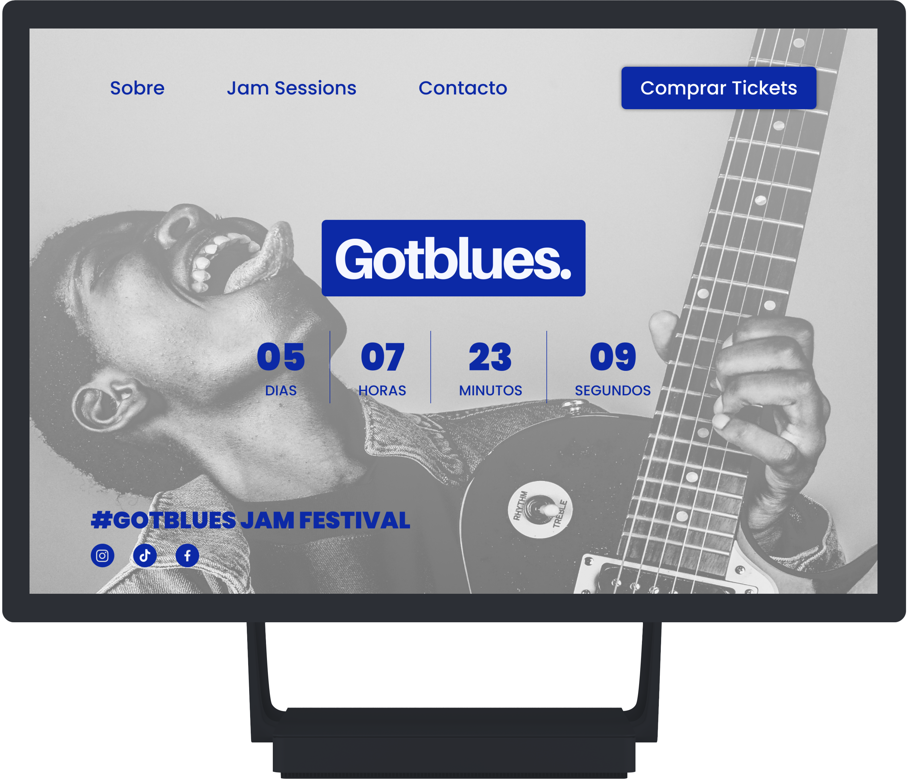

#Gotblues
 Ver proyecto completoProyecto
Microsite para un evento de Jam Sessions de música blues en Madrid.
Funciones
- User Researcher
- Information Architect
- Visual Designer
- Interaction Designer
Detalles
Proyecto en equipo que consistió en crear un microsite para un evento real o ficticio mediante un sistema de diseño sólido y flexible en un período de 2 semanas. Este microsite debía adecuarse a tres ocasiones: antes del evento, durante y después. Para su desarrollo se siguió la metodología del design thinking empleando diferentes herramientas en cada una de sus fases.